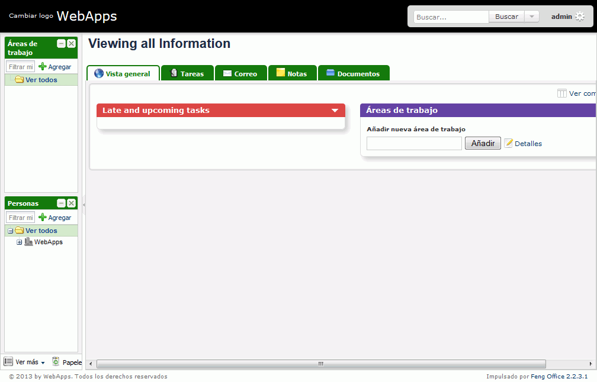
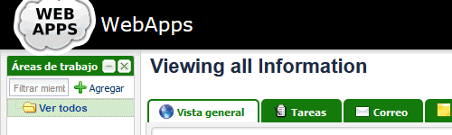
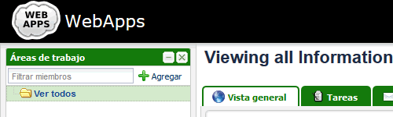
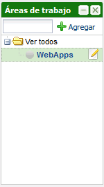
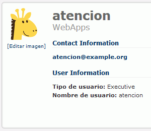
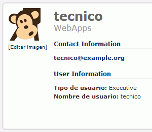
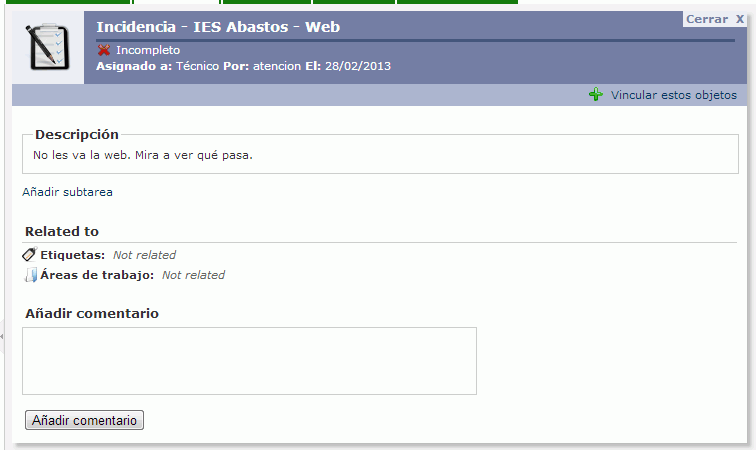
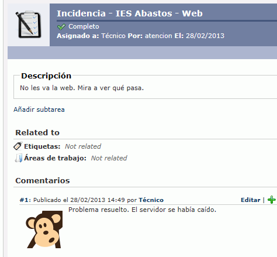

Estos ejercicios corresponden a una versión antigua de FengOffice. En esta web no hay disponibles ejercicios para versiones más recientes de FengOffice.
FengOffice es una herramienta de gestión de clientes y proyectos. En esta lección se proponen ejercicios para conocer y utilizar FengOffice.
No hay soluciones disponibles para estos ejercicios.
FengOffice 1 - Descargar FengOffice
Visitar la página web del proyecto FengOffice.
Descargar la versión FengOffice 2.2.3.1, publicada el 6 de febrero de 2013. Se recomienda esa versión ya que estos ejercicios se han preparado para ella.
Si la versión FengOffice 2.2.3.1 ya no está disponible en la web del programa, puede descargarla desde la página de Descarga de aplicaciones antiguas.
Descomprimir FengOffice en la carpeta adecuada para poder ejecutarlo en el servidor local.
FengOffice 2 - Instalar FengOffice
En este apartado se trata de poner en marcha FengOffice:
Crear con phpMyAdmin un usuario de MySQL con nombre iwb_fengoffice_1, contraseña iwb_fengoffice_1 y base de datos iwb_fengoffice_1.
Ejecutar desde Eclipse el archivo fengoffice/index.php.
Rellenar la información necesario para crear el blog. Por ejemplo:
Nombre de la empresa: WebApps
Datos del usuario administrador:
nombre: admin
dirección de correo: admin@example.org
contraseña: admin
Comprobar que FengOffice funciona:

FengOffice 3 - Personalizar página de inicio
Incluir el siguiente logotipo del sitio web:
Comprobar que la imagen es demasiado grande para el espacio disponible:

Cambiar la imagen por una más pequeña:
Comprobar que esta imagen ya es adecuada:

FengOffice 4 - Copias de seguridad
Realizar una copia de seguridad manual completa de la instalación (en los nombres de archivo propuestos AA es el año, MM el mes, DD el día y NN el número de copia del día):
Comprimir los archivos de la carpeta fengoffice en un archivo comprimido (por ejemplo, fengoffice_archivos_AAMMDDNN.zip).
Exportar desde phpMyAdmin la base de datos iwb_fengoffice_1 a un fichero sql (por ejemplo, fengoffice_db_AAMMDDNN.sql).
Escribir un archivo que explique qué blog se ha comprimido (por ejemplo, fengoffice_backup_leeme_AAMMDDNN.txt).
Comprimir todo lo anterior en un único zip (por ejemplo, fengoffice_AAMMDDNN.zip).
Una vez realizada la copia, borrar los archivos del disco y eliminar la base de datos
Reestaurar la copia de seguridad (descomprimir los archivos e importar la base de datos)
Comprobar que FengOffice funciona como antes.
FengOffice 5 - Acceso desde otros ordenadores
Acceder a FengOffice desde otras otras máquinas (desde otros ordenadores pertenecientes a la misma red o desde una máquina virtual en el mismo ordenador) incluyendo en la dirección la IP del servidor (es decir, en vez de http://localhost/NombreAlumno/iwb/aplicaciones/fengoffice/, escribiendo http://AAA.BBB.CCC.DDD/NombreAlumno/iwb/aplicaciones/fengoffice/, siendo AAA.BBB.CCC.DDD la IP del propio ordenador).
Comprobar que no funciona
Corregir este problema
FengOffice 6 - Áreas de trabajo y usuarios
Crear un área de trabajo llamada WebApps:

Crear un usuario de tipo Executive que se llame Atención (usuario y contraseña: atencion) y con la siguiente imagen:
Hacer una captura y guardarla como fengoffice_5.png:

Crear un usuario de tipo Executive que se llame Técnico (usuario y contraseña: tecnico) y con la siguiente imagen:
Hacer una captura y guardarla como fengoffice_6.png:

FengOffice 7 - Tareas
Como administrador, conceder permisos al usuario atencion para que pueda administrar tareas.
Como administrador, comprobar que los usuario atencion y tecnico están asignados al espacio de trabajo WebApps.
Como usuario atencion, abrir una tarea y asignarsela al usuario tecnico:

Como usuario tecnico, comentar la tarea y completarla:

FengOffice 8 - Documentos y notas
Como usuarios atencion y tecnico, crear documentos y notas y comprobar que los otros usuarios pueden editarlos.